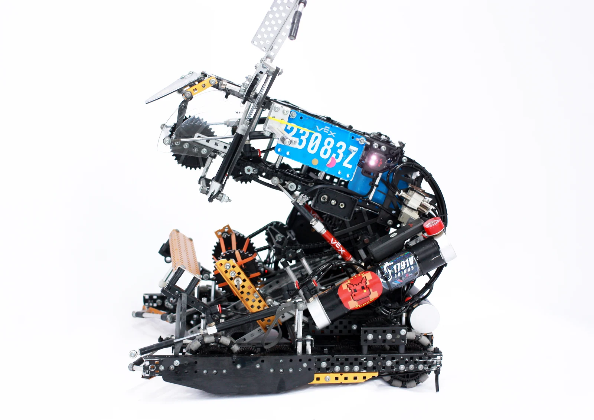
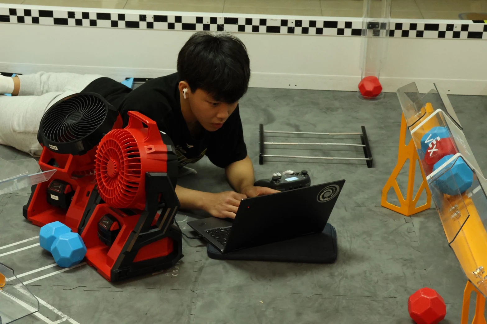
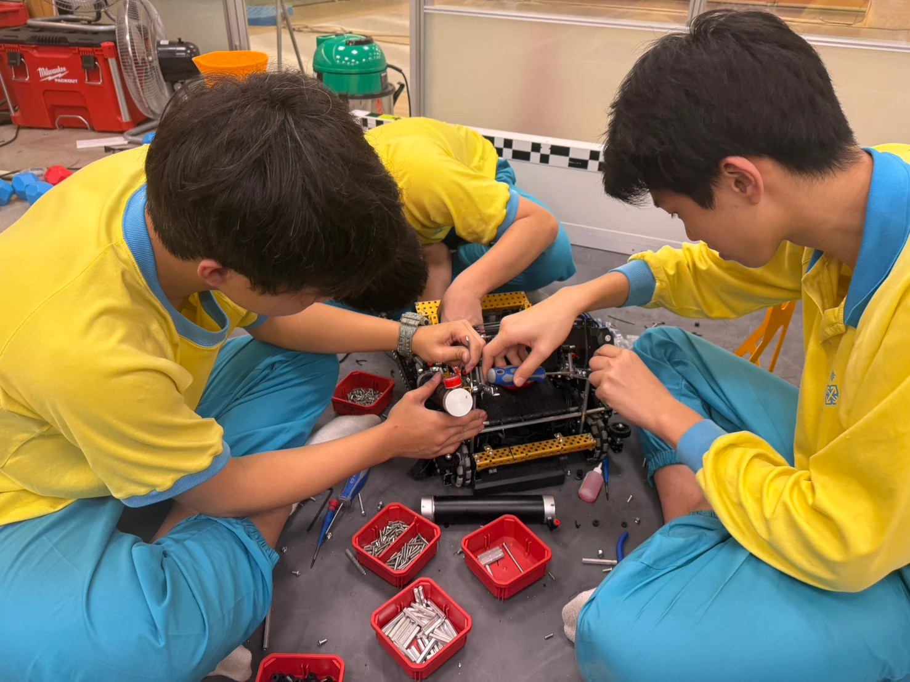
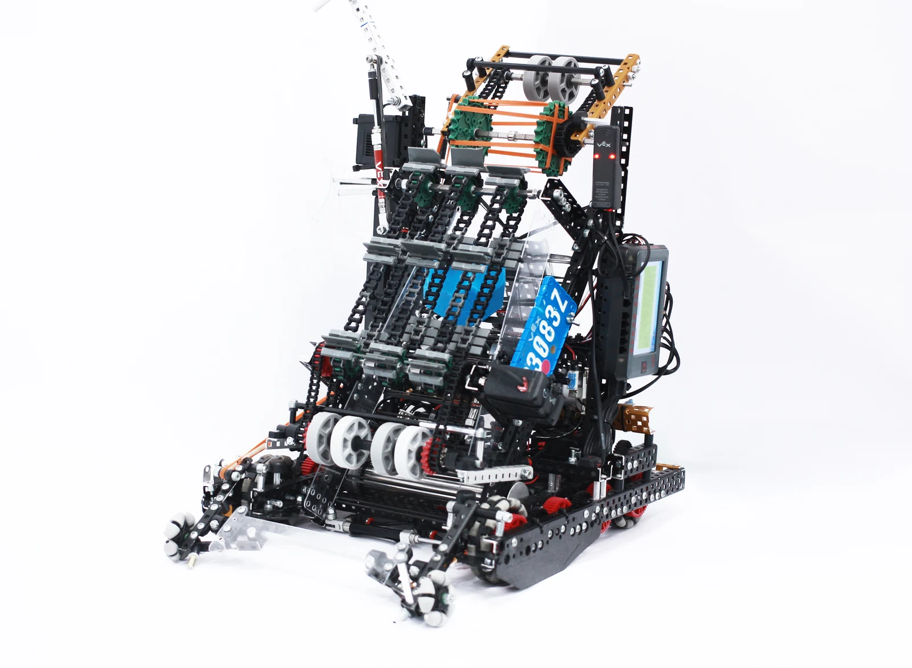
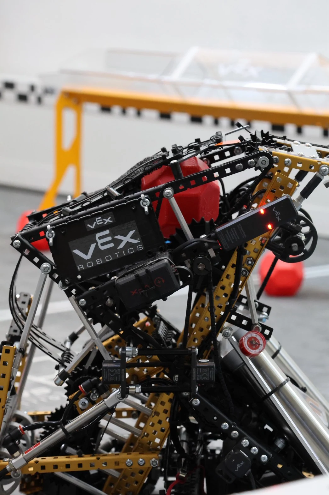
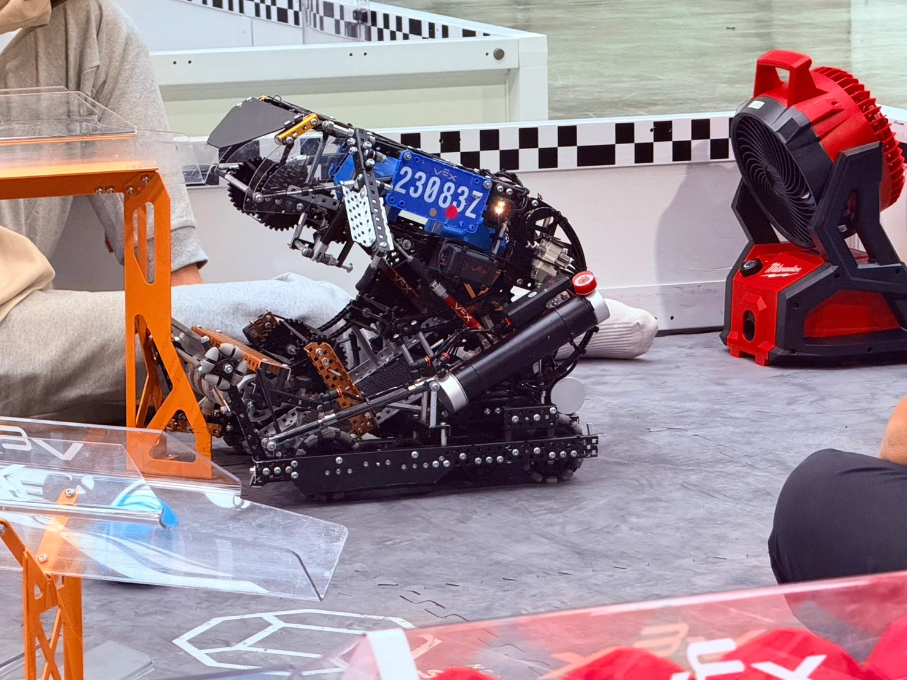
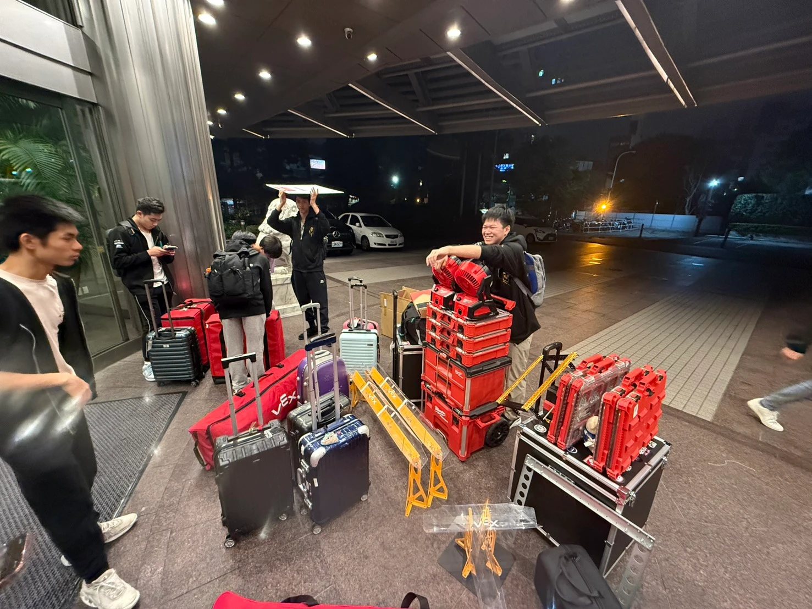
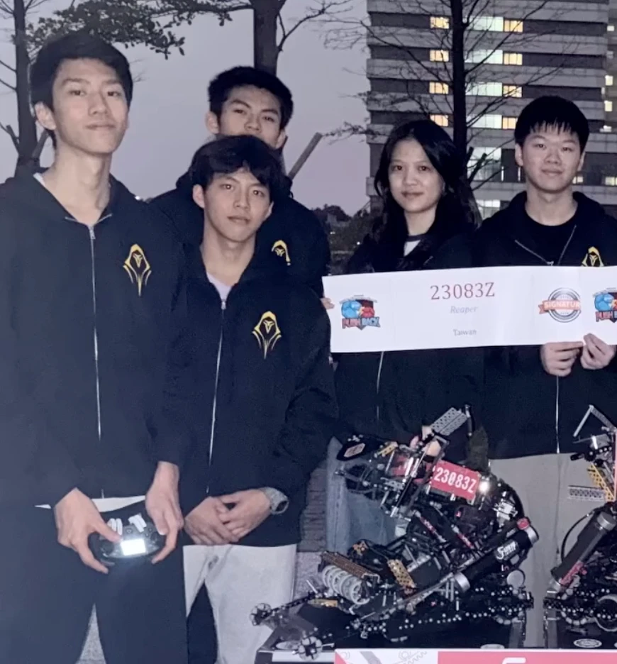
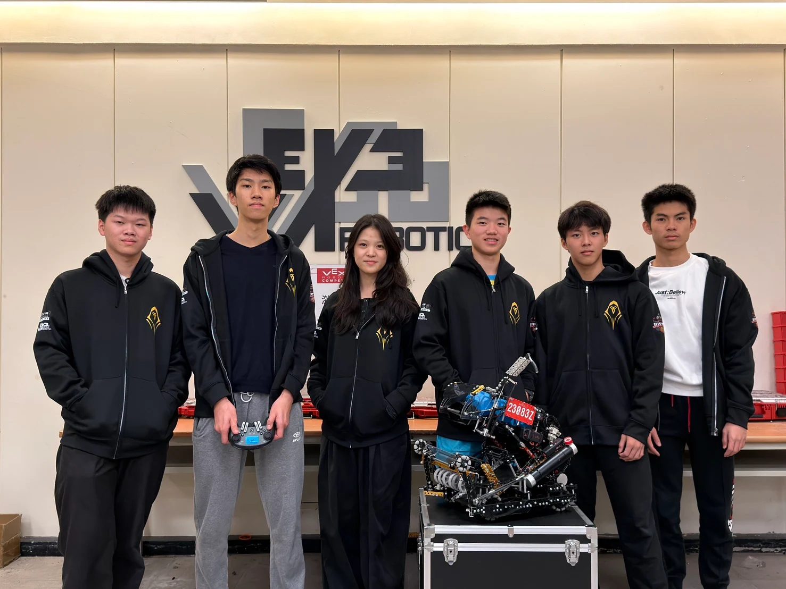
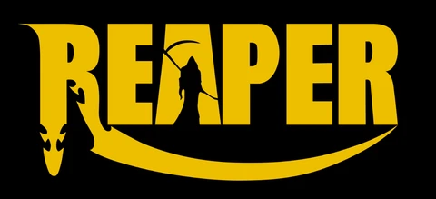

Intake
The intake collects blocks and feeds them into the robot. Our notebook follows the team’s loading-guide experiments and intake testing.
Open notebook / p. 143 ↙VEX Robotics / Reaper 23083Z
The robot is a team effort.
Here’s where I fit in.
Inside the machine / Select a numbered part
Two different builds.
One part at a time.

Main robot / Shared team build
The intake collects blocks and feeds them into the robot. Our notebook follows the team’s loading-guide experiments and intake testing.
Open notebook / p. 143 ↙Our main competition robot is shared team engineering. The notebook records the design process across several robot versions.
Open our engineering notebook / 2025–26 Push Back
439 pages of team engineering.
From first sketches to competition day.
Select a page to enlarge it. ← → to turn / Home & End to jump.
The autonomous playbook / My programming
I wrote both autonomous programs.
These clips show the routines and my PID gain tuning.
Programmed by me / Right-side routine
Programmed by me / Left-side routine
My tuning process / Short test recording
01 / My contribution


C++ / PROS, driver control, PID, odometry, and repeated tuning.
Test robot functions and solve failures with the team.
Contribute mechanism ideas and test how code and hardware work together.
02 / The build archive
Competition hardware, a separate build,
and a skills-challenge prototype.



03 / More than the robot
Planning, packing, fixing, and showing up.
The work belongs to all of us.




VEX Create Award · Sportsmanship Award
04 / Under the hood
Competition repositories represent shared team work.
05 / The whole team
Our people. Our robots. Our season.
Explore our team’s website right here.
Browse and scroll inside the team website above.